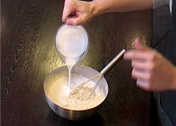

PRÉPARATION
-
Couper un oignon et une gousse d'ail en petit morceaux. Les faire revenir à feu doux dans une casserole ou une sauteuse avec une cuillère à soupe d'huile d'olive, jusqu'à ce que les oignons soient devenus un peu translucides. Afin d'exhaler les saveurs de l'oignon, démarrer la cuisson à feu vif pendant 1 à 2 minutes. Puis baisser le feu juste après pour ne pas que les oignons ne brûlent.
-
Une fois que les oignons ont pris une jolie couleur dorée, ajouter 800 g de pulpe de tomate. Saler, poivrer et ajouter une bonne cuillère à soupe d'herbes aromatiques (au choix : origan, basilic, thym). Laisser réduire et mijoter à feu doux pendant 20 minutes, avant de mixer ou non selon les goûts. Contrairement aux tomates fraîches, la pulpe en conserve étant plutôt acide, penser à ajouter 2 morceaux de sucre pour adoucir la sauce.
-
Pendant que la sauce mijote, faire chauffer un peu d'huile d'olive dans une poêle pour y faire revenir 300 g de viande de bœuf hachée à feu moyen pendant 3 à 5 minutes. Saler et poivrer, puis la mélanger à la sauce tomate réservée. Penser à dégraisser la viande avant de la mélanger à la sauce tomate. Pour cela, retirer la viande à l'aide d'une écumoire.
-

Dans une casserole, faire fondre 70 g de beurre, et ajouter la même quantité de farine hors du feu. Mélanger pour que le beurre soit absorbé. Ajouter 50 cl de lait très progressivement en mélangeant pour empêcher la formation de grumeaux. Replacer sur feu doux et laisser épaissir pendant quelques minutes. Saler, poivrer et ajouter une bonne pincée de noix de muscade.
-
Beurrer un plat, et y déposer une couche de béchamel, puis une couche de lasagnes, et une de sauce tomate à la viande parsemée d'emmental râpé. Répéter l'opération jusqu'à épuisement des ingrédients en terminant par de la béchamel, et saupoudrer avec du parmesan râpé. Les amateurs peuvent aussi ajouter des lamelles de champignons de paris au moment du montage.
-
Pour finir
Enfourner à four préchauffé à 165°c (thermostat 5/6) pendant 45 minutes environ, pour que les lasagnes soient bien gratinées. Si les lasagnes gratinent trop vite, les recouvrir de papier d'aluminium. Cuisinez, savourez…